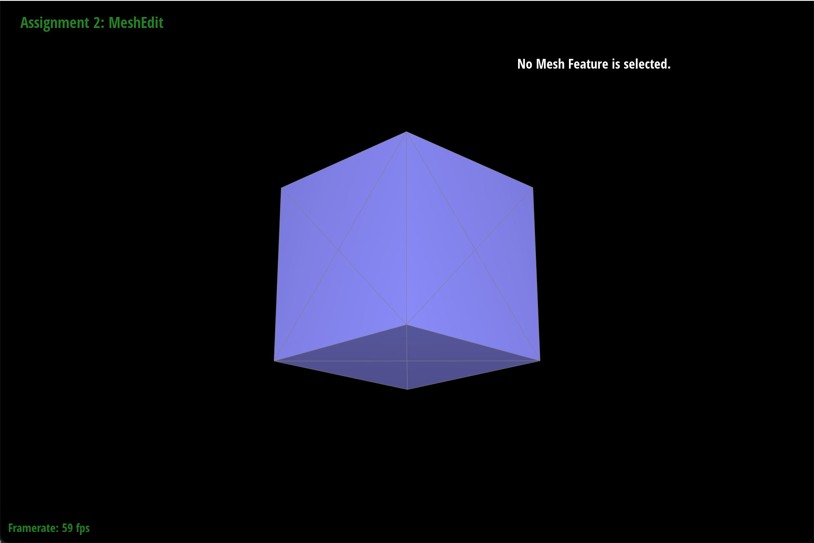

Overview
In the first part of this project, I implemented Bezier curves and surfaces with de Casteljau's algorithm. In the second part, I worked with the half-edge data structure to implement area-weighted vertex normals (smoother shading) and loop subdivision via edge splits and edge flips. Ultimately, I now have a functional mesh editor that can be used to load and manipulate triangle mesh files. I was very interested by the half-edge data structure, as I had never even heard of it before lecture/this project. It was fascinating to see how efficient it made it to manipulate meshes, especially during the loop subdivision part of the project.
Section I: Bezier Curves and Surfaces
Part 1: Bezier Curves with 1D de Casteljau Subdivision
Briefly explain de Casteljau's algorithm and how you implemented it in order to evaluate Bezier curves.
De Casteljau's algorithm is a recursive algorithm for calculating Bezier curves. Given n control
points a parameter t, each recursive step calculates a new set of n-1 control points using
linear interpolation. Eventually, a single point is reached, and this is the point lying on the Bezier
curve at parameter t. I implemented this algorithm in the function evaluateStep.
This function simply caluclates the n-1 new control
points given n control points and a parameter t by using linear interpolation between each
pair of adjacent control points.
Take a look at the provided .bzc files and create your own Bezier curve with 6 control points of your choosing. Use this Bezier curve for your screenshots below.
Below is a screenshot of my custom Bezier curve. I used the following control points: (0.200, 0.350) , (0.300, 0.200) , (0.500, 0.250) , (0.700, 0.450) , (0.500, 0.654) , (1.000, 0.900)
Show screenshots of each step / level of the evaluation from the original control points down to the final evaluated point. Press E to step through. Toggle C to show the completed Bezier curve as well.
|
|
|
|
|
|
|
|
|
|
|
Show a screenshot of a slightly different Bezier curve by moving the original control points around and modifying the parameter \(t\) via mouse scrolling.
Part 2: Bezier Surfaces with Separable 1D de Casteljau
Briefly explain how de Casteljau algorithm extends to Bezier surfaces and how you implemented it in order to evaluate Bezier surfaces.
I extended this algorithm to Bezier surgaces by using a combination of 3 functions: evaluateStep,
evaluate1D, and evaluate. The first function (from part 1) simply caluclates the n-1 new control
points given n control points and a parameter t. The second function calls the first function
until there's only one point left. The third function calls the second function along both axes to calculate a
point on a Bezier surface from a given grid of control points. It can be thought of as condensing/squishing an n x n grid
of points first along the x-axis to get just n points remaining, and then along the y-axis to get a single point remaining.
Show a screenshot of bez/teapot.bez (not .dae) evaluated by your implementation.
Section II: Triangle Meshes and Half-Edge Data Structure
Part 3: Area-Weighted Vertex Normals
Briefly explain how you implemented the area-weighted vertex normals.To implement area-weighted vertex normals, I iterated through all faces incident to the current vertex and multiplied the area of the face by it's normal vector. I then summed up all these weighted normals and normalized the resulting vector. Iterating through the faces required careful use of the half-edge data structure, and to find the area of each face I took half of the norm of the cross product of two adjacent edges of the face.
Show screenshots of dae/teapot.dae (not .bez) comparing teapot shading with and without vertex normals. Use Q to toggle default flat shading and Phong shading.
|
|
|
Part 4: Edge Flip
Briefly explain how you implemented the edge flip operation and describe any interesting implementation / debugging tricks you have used.To implement the edge flip operation, first I checked whether the edge was a boundary edge, and if so I just returned it. Otherwise, I followed the procedure outlined in this great resource I found online (somebody posted it on Ed): http://15462.courses.cs.cmu.edu/fall2015content/misc/HalfedgeEdgeOpImplementationGuide.pdf. This involved first storing pointers to literally every element in accessible variables and then setting all of them to their new values according to the "after flip" diagram in the resource.
Show screenshots of the teapot before and after some edge flips.

|
|
Write about your eventful debugging journey, if you have experienced one.
I did not have an eventful debugging journey (thankfully!). Everything worked the first time :)
Part 5: Edge Split
Briefly explain how you implemented the edge split operation and describe any interesting implementation / debugging tricks you have used.To implement the edge split operation, I once again followed the procedure outlined at http://15462.courses.cs.cmu.edu/fall2015content/misc/HalfedgeEdgeOpImplementationGuide.pdf. Before writing any code, I drew out a diagram of what the triangles would look like after executing an edge split, making sure to label every single element. In my code, I first stored pointers to all elements in accessible variables. Next, I created the new half-edge, vertex, edge, and face elements that result from an edge split operation. Lastly, I set all pointers to their new element values according to my drawn-out diagram.
Show screenshots of a mesh before and after some edge splits.
|
|
|
Show screenshots of a mesh before and after a combination of both edge splits and edge flips.
|
|
|
Write about your eventful debugging journey, if you have experienced one.
I did not have an eventful debugging journey (thankfully!). Everything worked the first time :)
If you have implemented support for boundary edges, show screenshots of your implementation properly handling split operations on boundary edges.
N/A
Part 6: Loop Subdivision for Mesh Upsampling
Briefly explain how you implemented the loop subdivision and describe any interesting implementation / debugging tricks you have used.
To implement loop subdivision, first I computed the new position of every vertex in the original mesh
using the formula from the project instructions. These new positions were stored in the
Vertex::newPosition field. I also marked each of these vertices as being an original vertex in the
Vertex::isNew field. Next, I computed the new positions of vertices to be created by splits, storing
these positions in the Edge::newPosition field. After this, I split every original edge (making sure newly created split-edges were not split too), flipped every
new edge connecting an old and a new vertex, and then updated the actual position of each vertex in the resulting mesh.
One debugging trick I used was just commenting out my code from the bottom up until I found which step was causing the bug.
Take some notes, as well as some screenshots, of your observations on how meshes behave after loop subdivision. What happens to sharp corners and edges? Can you reduce this effect by pre-splitting some edges?
After loop subdivision, sharp corners and edges become smoother/rounded, as can be seen in the images below. Subdivision also causes the framerate of the editor to drastically decrease, making it very slow...
|
|

|
|
Pre-splitting edges does not help reduce this effect; in fact, pre-splitting creates more triangles which contribute to even more smooth/rounded look after subdividing.
Load dae/cube.dae. Perform several iterations of loop subdivision on the cube. Notice that the cube becomes slightly asymmetric after repeated subdivisions. Can you pre-process the cube with edge flips and splits so that the cube subdivides symmetrically? Document these effects and explain why they occur. Also explain how your pre-processing helps alleviate the effects.This asymmetric effect is a result of the fact that the initial cube faces are split into two triangles with the splitting diagonal in an arbitrary and non-symmetric manner. Splitting along each of these diagonals to create an "X" pattern fixes this asymmetry because now the faces are subdivided evenly in all directions, as can be seen in the following images:
|

|
|
If you have implemented any extra credit extensions, explain what you did and document how they work with screenshots.
N/A